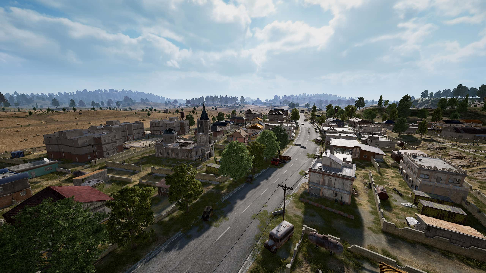

¡MAPAS DE PUBG!
En PUBG, los mapas son extensos y diversificados, ofreciendo diferentes entornos y desafíos para los jugadores. Cada mapa en PUBG presenta su propio estilo único de juego y desafíos, lo que permite a los jugadores experimentar una variedad de situaciones y estrategias mientras luchan por la supremacía en el campo de batalla.
ERANGEL
Este es el primer mapa lanzado en PUBG y presenta un paisaje variado que incluye bosques, llanuras, ciudades y áreas costeras. Es conocido por sus grandes extensiones de terreno abierto, lo que lo hace ideal para tácticas de francotirador y combates a larga distancia.



MIRAMAR
Situado en un desierto árido y montañoso, Miramar ofrece un terreno desafiante con una mezcla de colinas, cañones y áreas urbanas dispersas. Los jugadores deben adaptarse a las largas líneas de visión y aprovechar la cobertura limitada para sobrevivir.


Paramo
Paramo es un mapa más reciente en PUBG que se inspira en los Andes colombianos. Es un entorno montañoso y accidentado,
con una mezcla de vegetación densa, aldeas rurales y terreno rocoso.
Lo más distintivo de Paramo es su dinámica de juego única
El mapa cambia cada vez que se juega,
lo que significa que la ubicación de los objetos y los puntos de interés se altera en cada partida. Además, Paramo presenta eventos dinámicos,
como erupciones volcánicas y helicópteros de suministro, que añaden un elemento de sorpresa y estrategia a la experiencia de juego.
Este mapa fomenta el juego rápido y táctico, ya que los jugadores deben adaptarse rápidamente a los cambios en el terreno y aprovechar
las oportunidades que ofrece el entorno.
Vikendi
Este mapa se sitúa en un paisaje nevado y frío, con pueblos, bosques y montañas cubiertas de nieve. Vikendi es conocido por su jugabilidad táctica, con abundantes áreas de cobertura y terreno ondulado que ofrece oportunidades para emboscadas y enfrentamientos estratégicos.